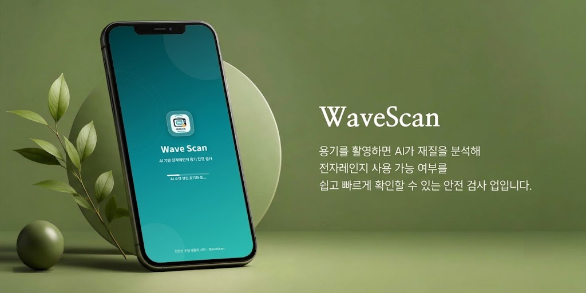
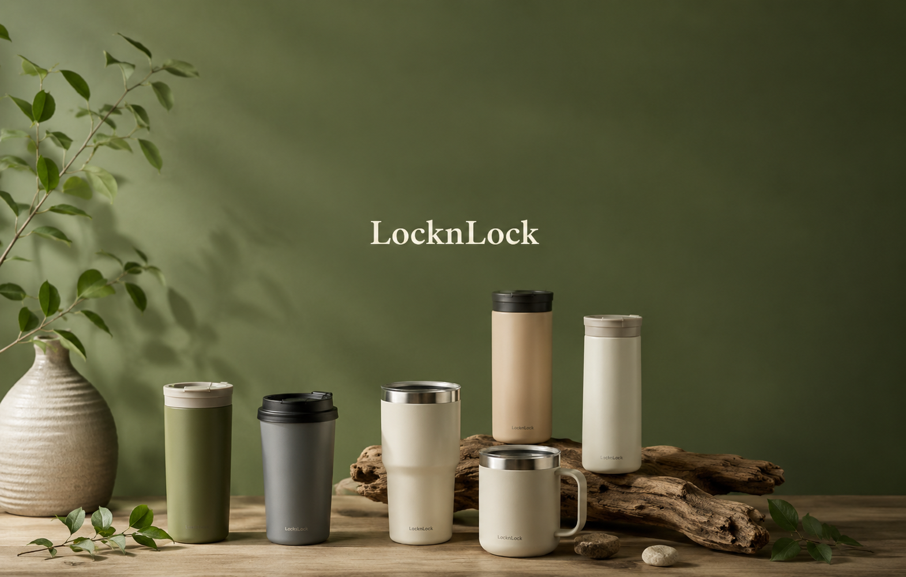
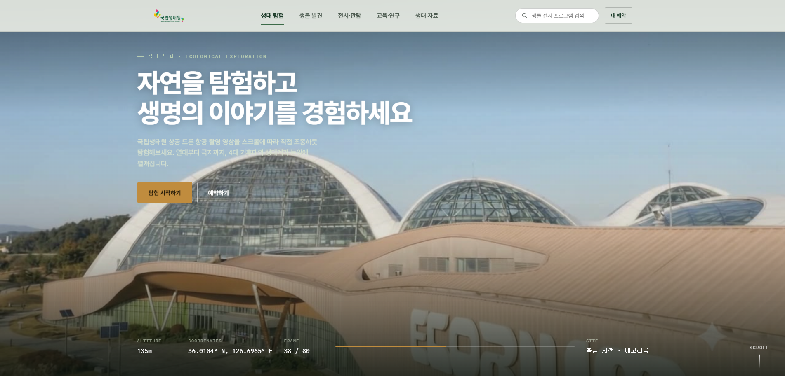

Web Publisher · 묵묵히, 꾸준히 완성하는 사람
화려한 경력은 없지만, 기복 없는 태도로 화면을 끝까지 붙드는 사람입니다. 한 줄씩 시맨틱하게 쌓아 올리는 일을 좋아합니다.
작업 보러가기경력은 짧지만, 그동안 다져온 태도와 지금 채우고 있는 것들로 대신 말씀드릴게요.
웹의 구조를 처음 배운 시간입니다. 화면 하나가 어떻게 짜여 있는지 궁금해하던 때였습니다.
실무 경력은 아직 없습니다. 대신 컨디션이나 감정에 휘둘리지 않도록 스스로를 다스리는 마인드 컨트롤과 멘탈 케어를 오래 훈련해왔습니다.
말이 앞서기보다 손을 먼저 움직이고, 팀에서는 먼저 나서기보다 경청하고 맞춰가는 태도로 일합니다.
잘하는 사람보다, 계속하는 사람이 되고 싶습니다. 반복을 지치지 않고 해내는 웹 퍼블리셔로 성장하는 것이 다음 목표입니다.
화면을 만드는 데 쓰는 언어와 도구입니다.
기획부터 배포까지 직접 붙들고 완성한 화면들입니다.


